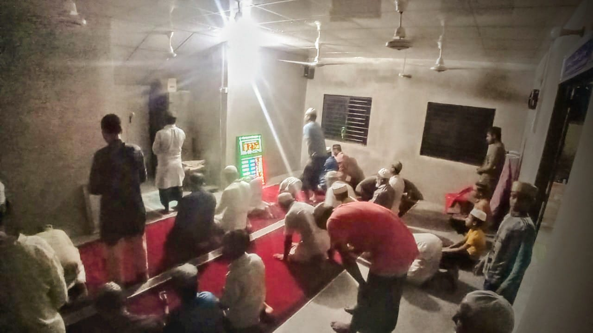

Baitul Haque Jame' Masjid Kusumbag: Building Project
Our Mosque at Google Map:
Here Are Some Photos During The Construction!
The site before construction began.
Laying the foundation - the first step.
Framing the structure - taking shape
Roof installation - providing shelter.
Interior work in progress - bringing the vision to life
Final touches - almost there!
Ma Shaa Allah - Success!
Look! Alhamdulillah Our Masjid is already completed with the grace of Allah SWT. But dear brothers and sisters! We made this mosque temporarily. Our main target is to make a fullfilled mosque. where every facility for the (Kids, Imam, Mu'adhdhin & Old-age) will be available. Untill we make one we will be considering this as our mosque. In Shaa Allah, When we have enough money in our fund, we will start the permanent mosque project very soon. We will frequently update the status of the Mosque. Here, All you need to check out the link.